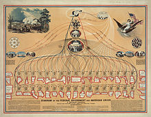

>On the Importance of and Difference between Classes and IDs in HTML and CSS
November 8, 2015

My reflection on classes and IDs in HTML and CSS, as well as some brief thoughts on the evolution of the web.
Read
My Website Reflection
October 24, 2015
Thoughts on creating repositories, the values of open source software, and much more.
Read
Reflecting on Tracking Changes
October 23, 2015
Thoughts on the importance of tracking changes through git.
Read
Reflecting on Time
October 23, 2015
How I plan to use the limitations imposed by time in my favor, even when it feels as if the weight of the world is on my back.
Read